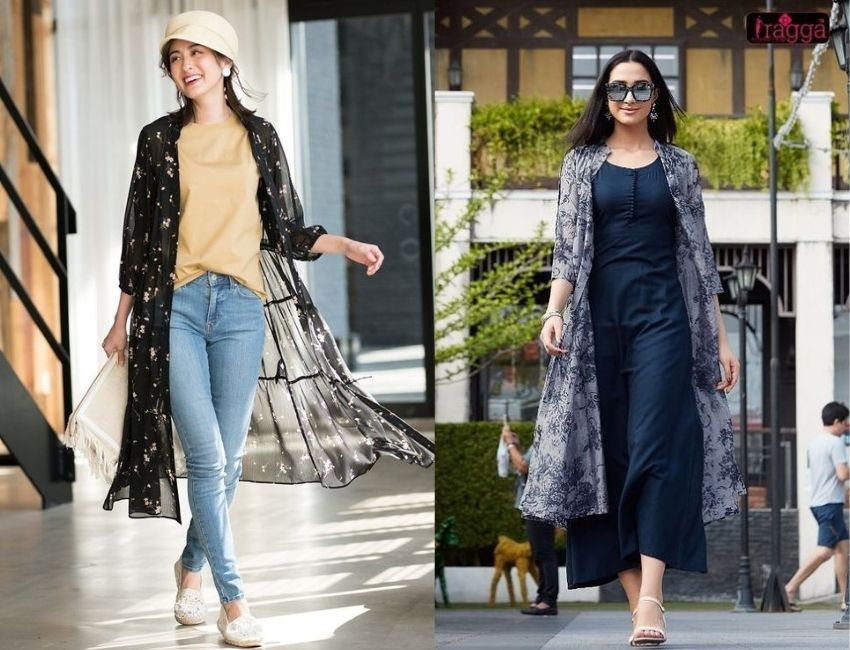
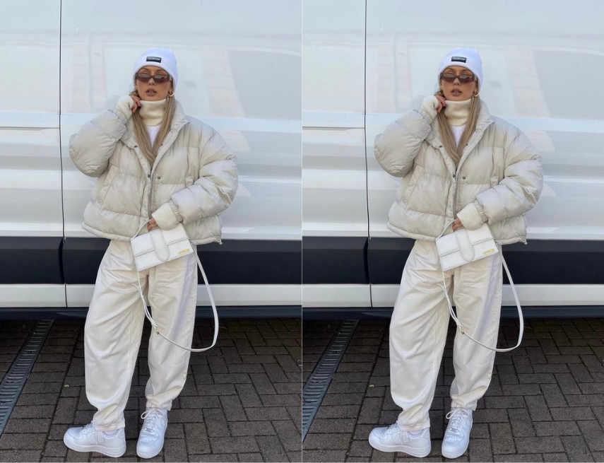
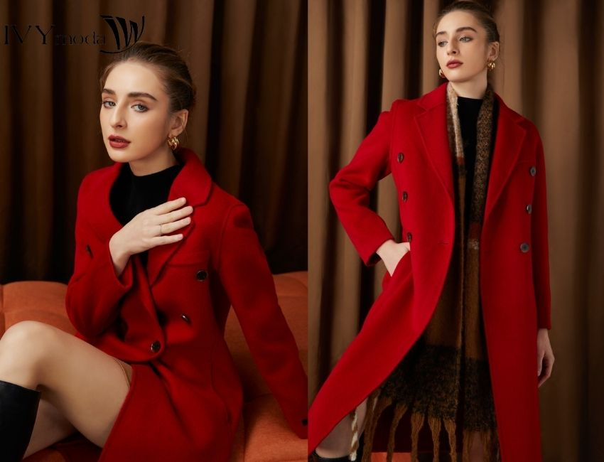
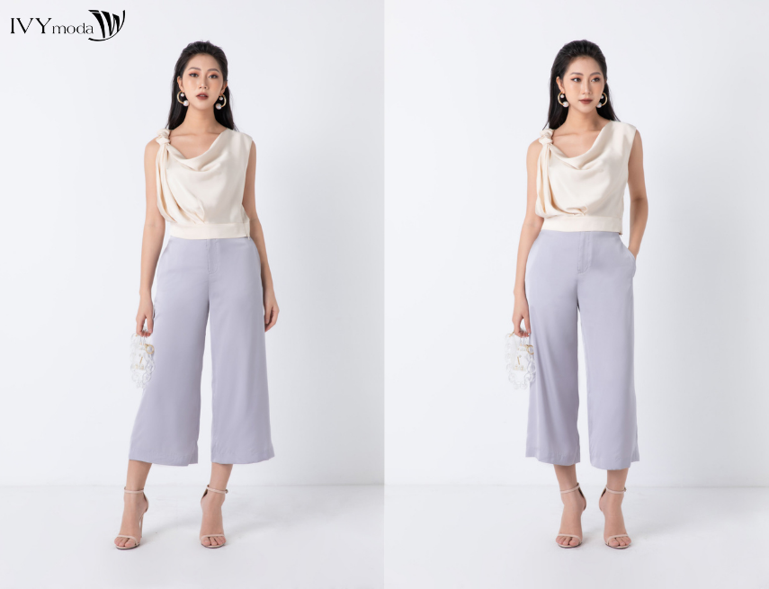
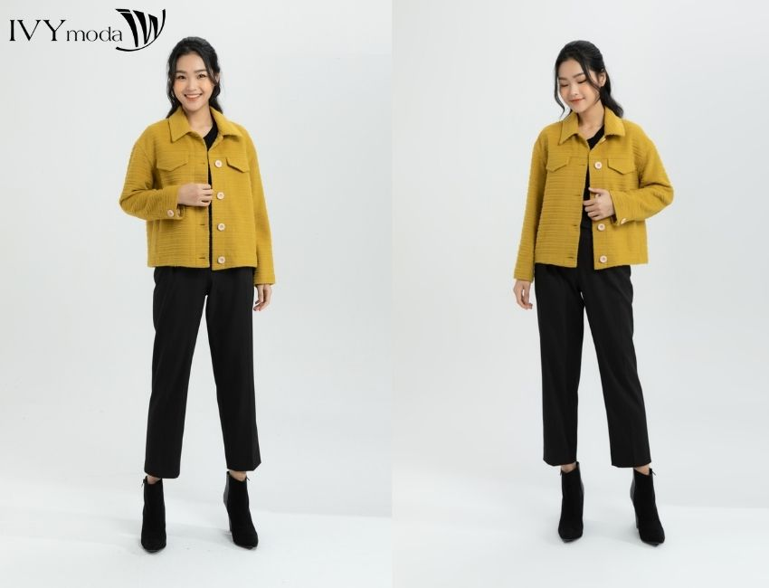
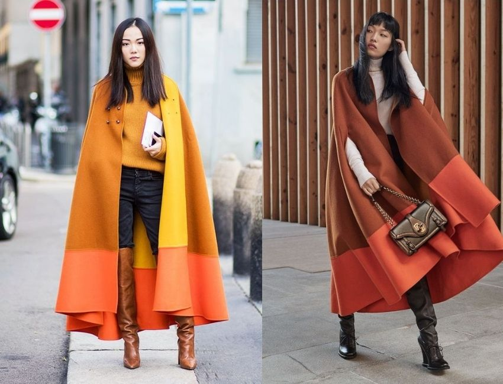
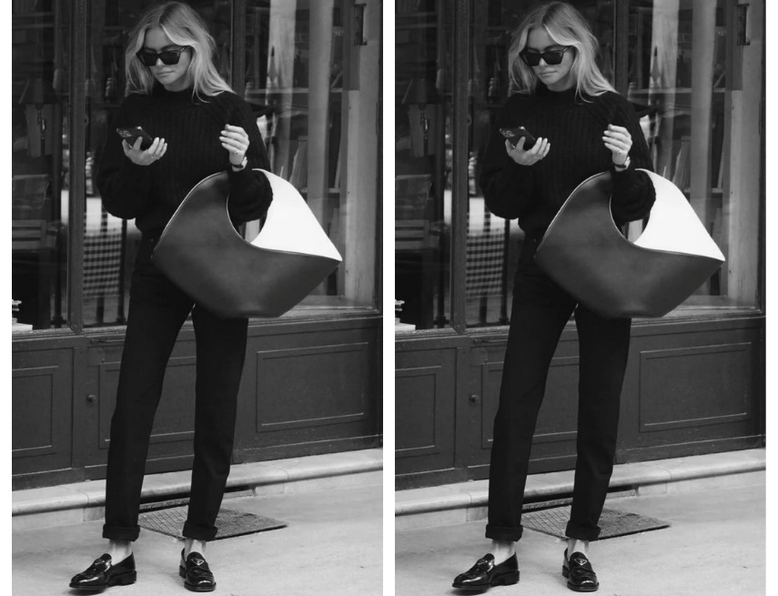
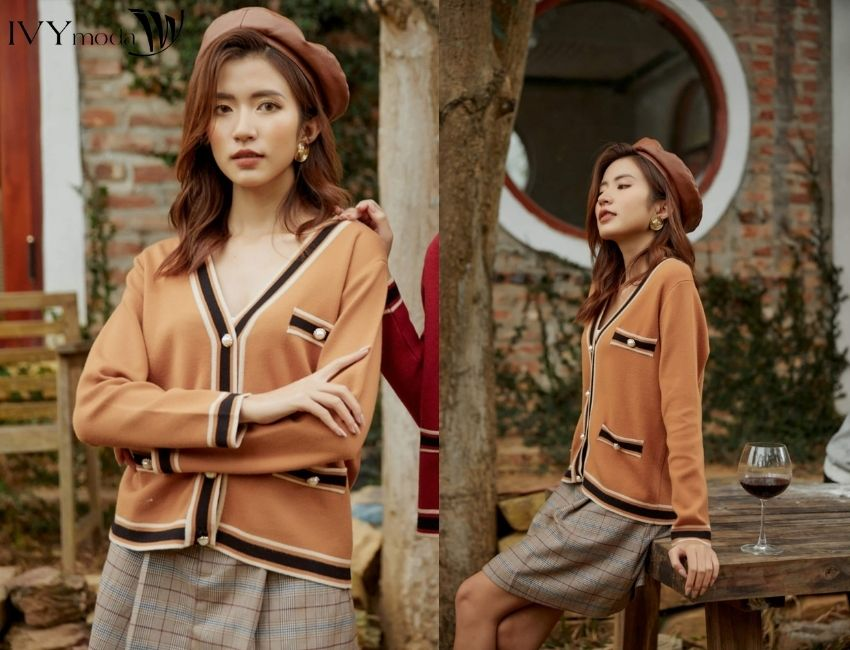

Tin Tức

TỔNG HỢP NHỮNG MẪU ÁO KHOÁC VOAN NHẸ NHÀNG CHO MÙA HÈ
Phong cách thời trang mùa Hè dành cho các cô nàng duyên dáng với thiết kế họa tiết hoa văn nhiệt đới luôn giúp nàng tràn đầy năng lượng và sức sống. Nằm trong danh sách những mẫu áo khoác nữ mùa Hè nổi bật và ấn tượng nhất không thể không kể đến áo khoác voan. Cùng IVY moda tìm hiểu về mẫu áo khoác voan dành cho các nàng theo đuổi phong cách duyên dáng và nữ tính qua bài viết này nhé!

CÙNG TÌM HIỂU VỀ SWEATER VÀ NHỮNG BỘ ĐỒ ĐẬM CHẤT STREETWEAR
Streetwear - phong cách thời trang cá tính phù hợp với những người cá tính mạnh mẽ, cá tính mà đầy thu hút. Nếu bạn đang tìm hiểu về phong cách này thì hãy khám phá ngay qua bài viết dưới đây cùng IVY moda nhé!

CHINH PHỤC NHỮNG MẪU ÁO KHOÁC ĐỎ CHO GIÁNG SINH ẤM ÁP
Áo khoác đỏ là trang phục khiến các nàng gợi nhắc về những bữa tiệc cuối năm đầy sôi động để chào đón một năm mới. Cùng IVY moda khởi động mùa Giáng Sinh và năm mới cùng những mẫu áo khoác đỏ đem lại may mắn và tài lộc cho nàng.

TIPS PHỐI ĐỒ CỰC THU HÚT CÙNG QUẦN CULOTTES
Quần culottes là mẫu quần vừa thanh lịch, vừa thoải mái có thể diện ở rất nhiều dịp khác nhau. Tuy nhiên không phải ai cũng hiểu về dáng quần culottes cơ bản để có thể khéo léo kết hợp cùng các loại trang phục khác nhau. Nếu bạn cũng chưa biết cách phối đồ cùng quần culottes thì hãy cùng tham khảo ngay bài viết dưới đây cùng IVY moda nhé!

BÍ QUYẾT PHỐI ĐỒ VỚI ÁO KHOÁC MÀU VÀNG CỰC XINH CHO THỜI TIẾT GIAO MÙA
Màu vàng vốn được coi là gam màu nóng với sự tươi mới và khả năng phối đồ trẻ trung dành cho các nàng. Đây la item ít được sử dụng trong các trang phục thường ngày nhưng thay vào đó là một phong cách mang đậm không khí ngày tết, sắc xuân. Cùng IVY moda điểm qua những mẫu áo khoác màu vàng làm nên cả vườn xuân cho phái đẹp qua bài viết dưới đây nhé!

CÔNG THỨC PHỐI ĐỒ VỚI ÁO KHOÁC CÁNH DƠI CỰC XINH CHO NÀNG CÁ TÍNH
Nhắc đến trang phục Thu - Đông dành cho các tín đồ thời trang nữ thì không thể bỏ qua những item “có tiếng” như áo khoác dạ, áo dạ tweed hay áo khoác phao. Bên cạnh đó, xu hướng thời trang năm nay đang hướng đến những mẫu áo mang đến cho nàng diện mạo mới như mẫu áo khoác cánh dơi hay còn gọi là áo cape hiện đại. Hãy cùng IVY moda tìm hiểu về mẫu áo khoác nữ độc đáo này nhé!

PHONG CÁCH MINIMAL LÀ GÌ? GỢI Ý PHỐI ĐỒ CHO PHONG CÁCH MINIMAL
Phong cách minimal hay còn gọi là phong cách tối giản là một phong trào nghệ thuật nổi lên ở New York- Mỹ vào những năm đầu thập niên 1960. Sự tối giản được hiểu là đơn giản hóa trong việc thiết kế ở nhiều lĩnh vực. Nếu bạn đang muốn tìm hiểu về phong cách này thì hãy tham khảo ngay qua bài viết dưới đây nhé.

MÁCH NÀNG NHỮNG MẪU ÁO KHOÁC MỎNG CHO MÙA HÈ THÊM NĂNG ĐỘNG
Một chiếc áo khoác mùa hè mỏng nhẹ là sự lựa chọn hoàn hảo để nàng tận hưởng cảm giác dễ chịu và thoải mái mà không lo bí bách hay cồng kềnh. Để giúp nàng diện xinh, lại vừa chống nắng bảo vệ làn da, IVY moda sẽ gợi ý cho nàng những mẫu áo khoác mùa hè năng động và sành điệu nhất qua bài viết này nhé!
<<
1
2
3
4
5
>>
Trang cuối